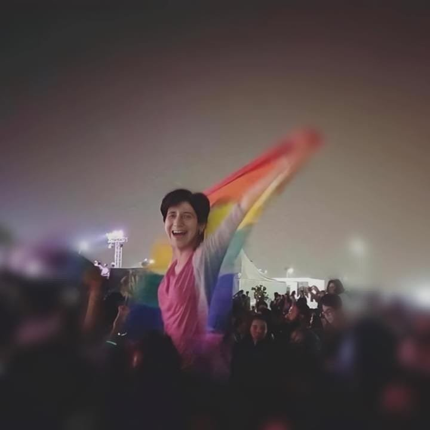

Sarah Hegazy
On queerness and the jargon of authenticity
This text was originally published in Mada Masr on 22 July 2020
By Ismail Fayed
It must have been such a fraught moment for everyone who witnessed it: the first attack on the empire since Pearl Harbor in 1941. The invincible empire and its architectural megalith signifying everything advanced capitalism has achieved: an unprecedented accumulation of resources, impressive engineering feats, and at the time construction was finished, the Twin Towers of the World Trade Center were the tallest buildings on Earth. And the moment they were attacked in that fateful moment on September 11 2001, the whole world changed. It had to. The empire had to strike back.
This was war, but the Reagan era had officially ended, and now the war was no longer on drugs (the Republicans so clever in weaponizing politics beyond recognition), it was on "terror." The catchphrase landed George Bush Jr. a second term in office and is loosely defined as any threat to American interests. At that point it was decided that Muslims and Arabs were the primary suspects and a wave of Islamophobia arose from the rubble of the Twin Towers, a wave that still casts shadows on the world today.
To be an academic in New York at the time must have been overwhelming, to say the least, especially an academic of Arab origins, even if you are not Muslim, or the opposite, a Muslim intellectual, who is not an Arab, a double bind in all cases. Where does your loyalty lie? And how can you assert academic integrity and autonomy when you are constantly dealt with as a potential "suspect?" The initial, inevitable response is to defend the "victims", in that case the millions in the Middle East and elsewhere that had to pay the price for an attack they had nothing to do with. Arab Americans or Muslim Americans must have had a terrible time since becoming the new target minority, "the new enemy." And defending them was not only the logical thing to do but the ethical thing to do. But defending Arabs or Muslims in and outside of the "empire" and treating both communities as if they have the same interests and suffer the same prejudices is the start of our current predicament: the diaspora versus the communities within. Arabs and Muslims in the Middle East might have been under the threat of the empire, the 2003 war in Iraq an all too horrific consequence, but they were definitely not a minority and definitely did not suffer prejudice because they are Arab or Muslim in their own homelands. The conflation between discrimination and vilification of Muslims and Arabs in the US with Muslims and Arabs in the Middle East created the assumption that Arabs and Islam are under attack everywhere.
And so the interest and well-being of the Arabs and the Muslims in the Middle East and elsewhere were aligned with questions about identity and the connection between loyalty to the empire and loyalty to a religion or a culture identity (i.e. Islam or Arabness, etc.), questions that hold no meaning in their local contexts. For example, one can hardly think that any Egyptian was a suspect by the Egyptian government because of calling himself "Egyptian" or that other Muslims in Egypt questioned their fellow Muslims because of their adherence to Islam. As much as postcolonial academics would like to say that the state persecuted Islamists for their faith or religiosity, and the state definitely did, it was never about their adherence to particular religious practices or expression of faith. The state's vendetta with Islamists was always and remains political: a scramble for power disguised as a religious conflict.
The late 1990s and early 2000s was also the heyday of the anti-globalization movement, which expressed solidarity against the "war on terror" and the invasion of Iraq but also breathed a second life into postcolonial studies, reaffirming their assumptions that world relations and power dynamics are not free from asymmetry and that former colonizers still retain more power due to that surplus of resources they accumulated through centuries of colonization. Former colonies are still suffering the impact of this and world relations are characterized by new forms of exploitation and control. This time around, it is through globalized trade and massive deregulation of the market coupled with military deployment abroad to combat fictitious enemies. How else to funnel this surplus? War is the ideal economy for exploitation and extraction. No one in their right minds in 2003 would think that either postcolonial academics or anti-war activists were wrong to see the world through those lenses.
Postcolonial academics and intellectuals of color almost faced a similar position to Arab Americans and Muslim Americans; they are "brown" persons from the periphery working in Western academia, somehow expected to be experts on their home countries and to provide "useful" knowledge that can be put to use to the empire (think tanks, advisory councils, policy consortiums, etc.), a position any academic would resent and rail against, naturally.
But no one stopped to think for a second about whether idealizing the victim (for postcolonial academics, the former colonies for postcolonial academics, or and Muslims for anti-war activists and intellectuals) was not an equally problematic path. In trying to uphold their moral autonomy and agency against "the empire," many intellectuals and academics turned a blind eye to the profound complexities and contradictions that engender the identity of the so-called Muslims and Arabs within. Everything became resistance. Every act of asserting a moral claim became a radical act of reviving a lost moral world. Every local rhetoric became unquestionably anti-imperialist rhetoric. By 2005, there were anthropologists who were doing field work in Egypt gathering Salafi sermons and labeling them "soundscapes of piety." A random cassette tape of some Salafi preacher sold in Ramses Railway Station in downtown Cairo became an emblem of moral outcry against the injurious moral regime of the imperialist powers. The Islamic revival movement in the early 2000s in Egypt, manifested in televangelists appealing to the upper middle classes as one example, became the battleground for "the politics of piety." None of this fieldwork actually interrogated this context: How and when did Salafi sermons become part of the so-called religious landscape and what does that mean for Egypt as a society? Do the women interviewed about their piety, who attend female-centered religious instruction like women-only classes in mosques targeting affluent middle and upper middle classes realize the crucial role of class in shaping not only their own religiosity but their very relationship to the state (that they are allowed to practice that so-called piety to begin with and in that specific way, protected by their class privilege)? Do they realize how changing political dynamics completely overhauled the "politics of piety" less than a decade later? The same class is arguably undergoing significant waves of de-veiling, for example. The same women who participated and made the piety of movement unmade it.
The wholesale idealization did not just stop at uncritically, and in many instances ignorantly, parroting extremely misogynistic, homophobic and outright sectarian rhetoric — it launched an assault on the last remaining vestiges of leftist opposition and its attempts at transforming itself to cause-lawyering and human rights defense. The early 2000s was the moment when the realization of politics as usual, via political mobilization and the formation of political parties, was more and more untenable and it was only through redefining the political along advocacy for rights, that the remains of the left was able to continue doing its work, in less than perfect circumstances and in many instances with extreme limitations as to what we think of as the political — the contesting of power between different stakeholders). But it became the only viable option for many from the left to join and use the unexpected thaw under Hosni Mubarak to form NGOs, offices, initiatives, and even companies that could continue advocacy and agitation, even if it meant using "Western" notions of rights and universal justice.
It seems now to us in hindsight unthinkable that a group of people who are trying to defend the moral autonomy and agency of Muslims from imperialist encroachment and injustice would want to attack, undermine and malign the human rights movement in Egypt. But this is exactly what happened. From 2006 till 2010, a flood of publications, books, conferences and everything in between focused on nothing else but the so-called international NGO networks that are "exporting" and poisoning "local politics" in the periphery. And to combat that, some of those academics and intellectuals saw fit to focus their entire careers and work on "locating" the "true, authentic subject" away from any "Western" influence, saving it from forever being lost to "Western-style modernity." It doesn't matter if that subject is misogynist, or sectarian or homophobic. In fact, it's quite the opposite. Feminism, the LGBT+ rights movement, and "universal rights" in general were all seen as imperialist tools to undermine the "morally pristine" universe of the authentic subject. It was seen as the reason why we, all of us living in the Middle East and the Global South, are suffering the miasma of modernity. We have veered from our idealistic pasts and now are facing the world, ill-equipped with Western-style humanism and "disconnected" from our roots.
It doesn't matter if we have lived all our lives in our respective countries, and never actually been "uprooted" from anything. It doesn't matter that we don't have a conflict of loyalty between our identity and the state (in comparison to Arab-Americans or Muslim-Americans or Muslims and Arabs in the diaspora). It doesn't matter that we are not a minority to begin with and that there was never a time when religion was not a completely embedded fundament of our society and our politics. All of this didn't matter. We were conceived as foreign agents, Western clients, who are trying to corrupt an "authentic" moral universe inhabited by ahistorical, atemporal subjects. This sounds not only naive but deeply apolitical. It suggests that a country like Egypt has remained unchanged since the late medieval and Ottoman times. Somehow Egypt's modernity did not touch on its subjects' formation and when it did, it did that in the "wrong way."
What these academics did not see, because they actually don't live in Egypt and really lack any nuance in understanding the everyday reality of its "citizens," was that by 2011 when the revolution erupted, decades of work by these human rights organizations managed to mainstream the notions of "rights," "social justice," etc. If it weren't for decades of agitating, advocacy and working within the extremely constrained and narrow spaces that Mubarak allowed to exist, we wouldn't have been able to find the language to express the grievances that were piling up, as academic studies about "authenticity" and "Western imperialism" were flooding the market.
Yet still, the revolution itself was maligned by disillusioned postcolonial academics, and the youth activists at the forefront were seen as nothing more than the victims of a Western secular conspiracy to establish Western-style democracy and the rule of law. The true authentic moral order is of course, without any doubt, an Islamist state. What that means for millions of Copts or women or LGBT+ communities is completely irrelevant, because a true Muslim polity would be able to address all those fears (How? No one is really able to answer that question. But answers vary between "Islam is the Answer" for everything and another is that, since all of those categories are "Western" categories, they are meaningless and don't exist, so we don't have to worry about them).
The revolution did not only highlight the meaningless dichotomy of military regime (the postcolonial militaristic state) versus the Islamist "vision" — it showed that people did not see any qualms in literally crushing a democratically elected Islamist government if it acted against their interests. So-much for the "authentic" Islamist representative of the people.
This doesn't just concern issues of rights and notions of citizenship. The globalization of media and entertainment, intellectual resources and social networking platforms had a tremendous influence on a generation that through its own local experience started to form a sense of who they are, and what they are, even within an environment that has become hostile to "divergent sexual practices." It is absurd that LGBT+ people in the early 2000s would refer to themselves with terms that date back more than 600 years ago because they are perceived as "authentic" and reflective of Arabic culture. And it's equally absurd to assume they somehow would not borrow and internalize many of the cultural and intellectual terms circulating around them in referring to their experience. Egyptian queerness then is not just accidental or a byproduct, but an essential experience of a much wider social experience that has been unfolding for more than three decades.
The revolution mainstreamed so many questions about grievances, presence and rights. And during the 18 days in Tahrir Square, there was an actual LGBT+ corner (opposite KFC, as "Western" as it can get) and those groups of gay men and women identified themselves as such. Everyone who was there knew they were there as such, and the question of what an Egypt where LGBT+ people can live would look like was part of the conversations in the square. This claiming of space and presence went beyond the 18 days. And when several initiatives working with feminist rights and queer sexualities developed from these embryonic conversations and attempts, it was only a matter of time before people started thinking of a repertoire of action and strategies of mobilization and discourse articulation that naturally borrowed from everywhere, the West included.
Sarah Hegazy might have been one of the many who were touched by these conversations and open questioning of the future. She chose to express this sense of ownership of oneself and the space one occupies by raising the rainbow flag during the concert of an LGBT+-friendly band. The state used this gesture to employ one of its favorite tactics, the "politics of distraction," by mobilizing people using their moral anxieties, and directing this immense energy toward a "practice of politics" where minorities and oppressed groups are scapegoated, which further effects an even more authoritarian crackdown and consolidation of power by the state. Many have criticized Sarah's waving of the flag. I was one of them. I explicitly said that while I don't necessarily feel the flag expresses my own sense of who I am, I stand by those who choose to wave it. Sarah's simple gesture cost her everything. She was arrested, tortured, maligned in the media and forced to flee into exile. Her mother passed away while she was away and she was unable to say farewell or join her family in that moment of grief. Sarah chose to end her life after the torture, exile and loneliness that took their toll on her.
Now everyone, including the very diasporic academics who a few years ago accused EVERYONE in the LGBT+ movement of being "Western agents" and "imperialist puppets" are mourning her and calling her a "teacher." I think Sarah would laugh at such a sudden change of heart that is nothing but insincere and opportunistic.
Every one of us, whether feminists, leftists, opposition, or members of the LGBT+ community, who are still living in Egypt and choose to fight and speak, are risking a fate very similar to Sarah's. Some already have faced that fate, some died in prison, some had to flee, some are still in prison.
There can be no greater disservice to Sarah's legacy and memory, and for everyone of us still trying to live in countries and cities that crush us and persecute us, than to have our suffering, our struggle cannibalized by diasporic, woke academics who write endless statuses on social media relating their "intellectual pedigrees" and priming their moral pretensions by ridiculous moral uponemanship, to use this as fodder for more academic promotion and intellectual clout.
Our queerness, our experiences of who we are, and what we are, are informed by everything we experience, Western or not. It does not dictate who we are, but it adds layers of meaning and expression. There is no way to extricate that so-called "Western-influence" from our identities, our stories, and how we relate to ourselves, how we relate to others and how we relate to the places we live in. This authentic and pristine utopia, free of any Western influence, only exists in the delusions of some postcolonial academics. And it's time they give up this quest for authenticity, because the price for this fevered search is literally our bodies and our lives.
This jargon failed to see that our lives were not just reified terms discussed in academic circles, graduate seminars and conferences for aspirant academics to attain tenure. Our lives matter beyond the jargon of authenticity. We were not just subjects to be looked at, from afar, judged as "lost" and "uprooted," implicated, accused of "disloyalty" and servitude to the West. We are part of a much larger struggle to reimagine politics beyond capitalism, to shatter patriarchy, to achieve radical justice. And if that remains unintelligible or "inauthentic" to some postcolonial academics, then it's time they came up with new theories.